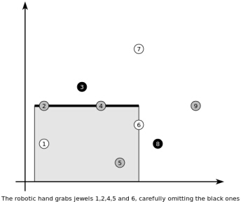

擅长偷盗的卢平想要偷走邪恶的欧文收藏的珠宝。欧文在他的商店里放置了n个珠宝。每个珍贵的石头一定有着k种颜色之一的颜色。展览馆非常的大，我们可以将珠宝视为欧几里得平面上的一些互异的点。这场展览由一些非常珍贵的报警设备来保护。
卢平发明了一种装置：一个巨大的机械臂，可以用来抢欧文的珠宝而不被任何报警设备发现。这只机械臂可以做一次抢的操作（也仅有一次）可以将在某条水平线段及其下方的所有珠宝拿走（如图）。卢平很容易偷走所有的珠宝，但是他知道，他拿得越多就越难不被发现。他决定选择一种安全的方案，他拿走的珠宝的颜色数不会超过k。

请你计算他在不拿走所有颜色的情况下最多拿多少个珠宝。